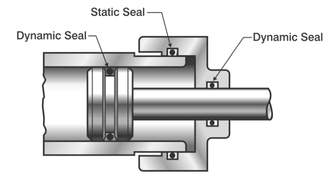
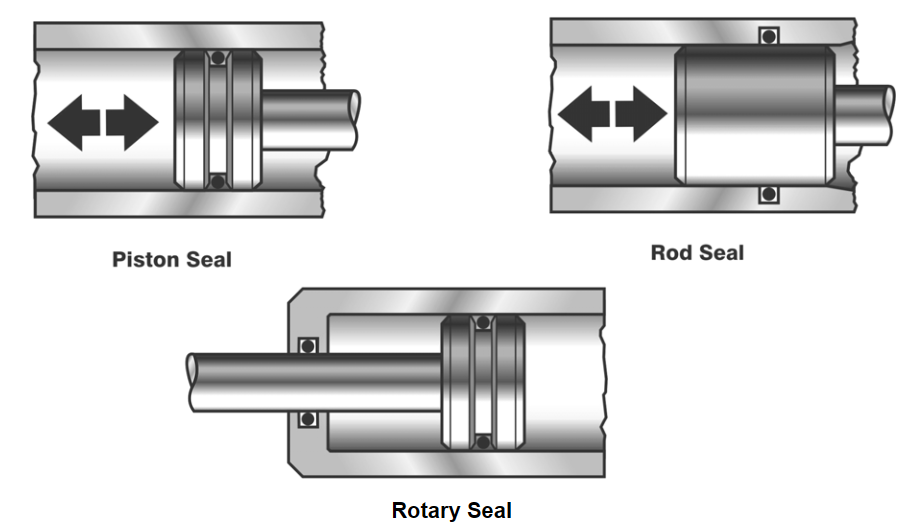

A seal is a device placed between two surfaces to prevent the flow of gas or liquid from one region to another. Seals are used for both static and dynamic applications. Static seals such as gaskets, bolt seals, back-up rings and sealants are used to prevent leakage through a mechanical joint when there is no relative motion of mating surfaces. Truly static seals are designed to provide a complete barrier to a potential leakage path. These seals are “zero leakage” seals (down to 10-11 scc/sec helium). In a truly static seal, the mating gland parts are not subject to relative movement except for thermal expansion and movement from the application of fluid pressure. Some static seals are designed to accommodate limited movement of the surfaces being sealed due to changes in pressure, vibration or thermal cycling, such as an expansion joint. These seals are sometimes referred to as semi-static seals.
A dynamic seal is a mechanical device used to control leakage of fluid from one region to another when there is rotating, oscillating or reciprocating motion between the sealing interfaces. An O-ring can be used in both static and dynamic applications; however, the employment of O-rings as primary dynamic seals is normally limited to short strokes and moderate pressures. An example of static and dynamic seal applications is shown in Figure 3.1.

This tool estimates the failure rate of dynamic seals — reciprocating, rotary, oscillating, and mechanical face seals — using the model from the Naval Surface Warfare Center Handbook of Reliability Prediction Procedures for Mechanical Equipment (NSWC-11, Chapter 3, Sections 3.3 and 3.4). Unlike static seals, dynamic seals experience sliding contact between mating surfaces, so wear rate, surface speed (PV factor), and surface finish play a dominant role.
The model uses two equations. Eq. 3-14 covers reciprocating, rotary, and oscillating O-ring/lip seals. At speeds below 800 rpm or 600 ft/min, all nine factors apply; at higher speeds CP, CDL, and CH are set to 1.0 and the pressure-velocity factor CPV governs. Eq. 3-16 covers mechanical (face) seals and always uses CPV without CP, CDL, or CH. The base failure rate for dynamic seals is 22.8 failures per million hours (vs 2.4 for static seals).
The following paragraphs discuss the specific failure modes and model parameters for dynamic seals. Mechanical seals are designed to prevent leakage between a rotating shaft and its housing. The mechanical seal is indicated as the dynamic seal faces in Figure 3.8. Section 3.4 contains specific information on mechanical seals.

Select the seal mode, enter operating conditions, then press Calculate. Results include λSE, MTBF, all multiplying factors, and a computed PV value ready for FMECA use.